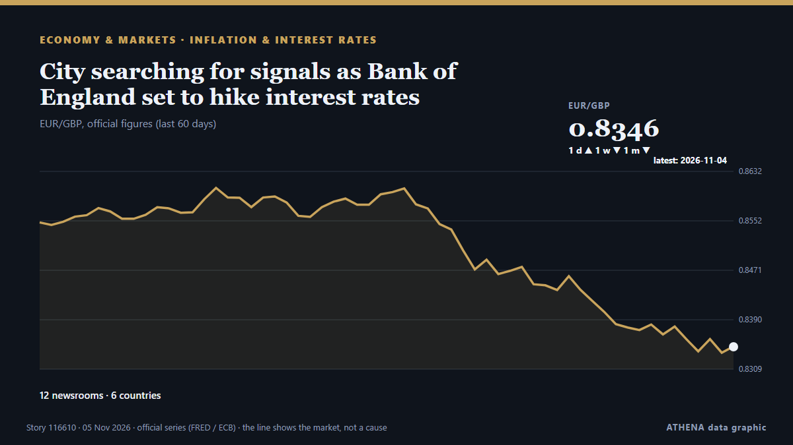

City searching for signals as Bank of England set to hike interest rates

City traders are searching for any signs the Bank of England could move faster in hiking interest rates in the coming months with policymakers widely expected to tighten monetary policy on Thursday . από City A.M.
Αναφέρθηκε ανεξάρτητα από 12 μέσα σε 6 χώρες από τις 3 Νοε, πρώτο το Utility Dive· η κάλυψη κορυφώνεται. Το ATHENA εκτιμά τον κίνδυνο μέτριο (2.5/10), κυρίως λόγω της σοβαρότητάς του και της τεκμηρίωσης. Βεβαιότητα 88% (υψηλή): το επιβεβαιώνουν 12 ανεξάρτητα μέσα, μέση αξιοπιστία 70%. Μέσα ανά χώρα: Ηνωμένο Βασίλειο (6), Ισπανία (5), Ηνωμένες Πολιτείες (4). Κάλυψη: 3 Νοε έως 5 Νοε, 45 ώρες.
Γιατί έχει σημασία: Οι κεντρικές τράπεζες ορίζουν την τιμή του χρήματος· οι αποφάσεις τους για τα επιτόκια κινούν νομίσματα, ομόλογα, στεγαστικά δάνεια και χρηματιστήρια σε όλο τον κόσμο.
Τι άλλαξε: 13 νέες αναφορές από 8 μέσα στο 24ωρο έως 5 Νοε.
Πρώτη διατύπωση: City AM Shadow MPC urges Bank of England to hike interest rates
Οι τίτλοι των ειδήσεων παρουσιάζονται στα αγγλικά, όπως δημοσιεύτηκαν.
Με μια ματιά
Επιλέγεται, βαθμολογείται και γράφεται από τη δημοσιευμένη μεθοδολογία του ATHENA. Κανένας συντάκτης δεν παρεμβαίνει σε μεμονωμένα γεγονότα. Πώς παράγεται ›
| 03 Nov 14:54 UTC | 1 |
|---|---|
| 03 Nov 16:54 UTC | 2 |
| 03 Nov 18:54 UTC | 0 |
| 03 Nov 20:54 UTC | 0 |
| 03 Nov 22:54 UTC | 0 |
| 04 Nov 00:54 UTC | 0 |
| 04 Nov 02:54 UTC | 1 |
| 04 Nov 04:54 UTC | 0 |
| 04 Nov 06:54 UTC | 2 |
| 04 Nov 08:54 UTC | 0 |
| 04 Nov 10:54 UTC | 3 |
| 04 Nov 12:54 UTC | 1 |
| 04 Nov 14:54 UTC | 0 |
| 04 Nov 16:54 UTC | 0 |
| 04 Nov 18:54 UTC | 0 |
| 04 Nov 20:54 UTC | 0 |
| 04 Nov 22:54 UTC | 0 |
| 05 Nov 00:54 UTC | 1 |
| 05 Nov 02:54 UTC | 3 |
| 05 Nov 04:54 UTC | 1 |
| 05 Nov 06:54 UTC | 2 |
| 05 Nov 08:54 UTC | 1 |
| 05 Nov 10:54 UTC | 2 |
| 04 Nov 03:40 UTC | 0.9 |
|---|---|
| 04 Nov 12:45 UTC | 1.9 |
| 05 Nov 08:03 UTC | 2.0 |
| 05 Nov 14:15 UTC | 2.5 |
| 05 Nov 14:15 UTC | 2.5 |
Γιατί αυτοί οι αριθμοί
Σημασία
Κίνδυνος
Βεβαιότητα
Η κάλυψη — ποιος το ανέφερε και πότε
ο τίτλος όπως δημοσιεύτηκε · ανοίγει το πρωτότυπο- Utility Dive · Ηνωμένες ΠολιτείεςDominion sees $137M net income boost from rate increase
- ZDNet · Ηνωμένες ΠολιτείεςNvidia RTX 50 GPUs hit with more price hikes – up to $500
- HousingWire · Ηνωμένες ΠολιτείεςMortgage rates have a quiet week as markets digest Fed comments, Trump’s directive
- City A.M. · Ηνωμένο ΒασίλειοCity AM Shadow MPC urges Bank of England to hike interest rates
- Big Think · Ηνωμένες ΠολιτείεςA fake Einstein quote actually explains the affordability crisis
- FXStreet · ΙσπανίαCEE: Rising unemployment tests labour market resilience
- City A.M. · Ηνωμένο ΒασίλειοBank of England set for ‘further interest rate hikes’ as businesses boost jobs
- FXStreet · ΙσπανίαEuropean Central Bank: Gradual tightening path – Nordea
- Business Daily Africa · ΚένυαNavigating a higher for longer world: What it means for your portfolio
- Guardian Business · Ηνωμένο ΒασίλειοUK interest rates increase expected after services sector activity accelerates
- investingLive (ForexLive) · INTBank of England preview: first hike to 4% expected as energy pushes inflation to 3.5%
- Free Malaysia Today · ΜαλαισίαBank of England set to raise rate as inflation jumps
- City A.M. · Ηνωμένο ΒασίλειοCity searching for signals as Bank of England set to hike interest rates
- Bangkok Post — page reader · ΤαϊλάνδηBank of England poised to raise rate as inflation jumps
- FXStreet · ΙσπανίαPositive sentiment brings Oil to two-month low
- FXStreet · ΙσπανίαBoE Press Conference: Governor Bailey comments on policy outlook after raising interest rate to 4%
- Guardian Business · Ηνωμένο ΒασίλειοToday’s UK interest rate rise unlikely to be the last unless Iran war ends; Wall Street slides on AI fears – business live
- WalesOnline · Ηνωμένο ΒασίλειοBank of England interest rate rise 'should not happen' today
- FXStreet · ΙσπανίαECB’s Zigman: Rather big chance rates will be raised in December
- investingLive (ForexLive) · INTBank of England raises the Bank Rate to 4.00% as expected in a 9-0 vote